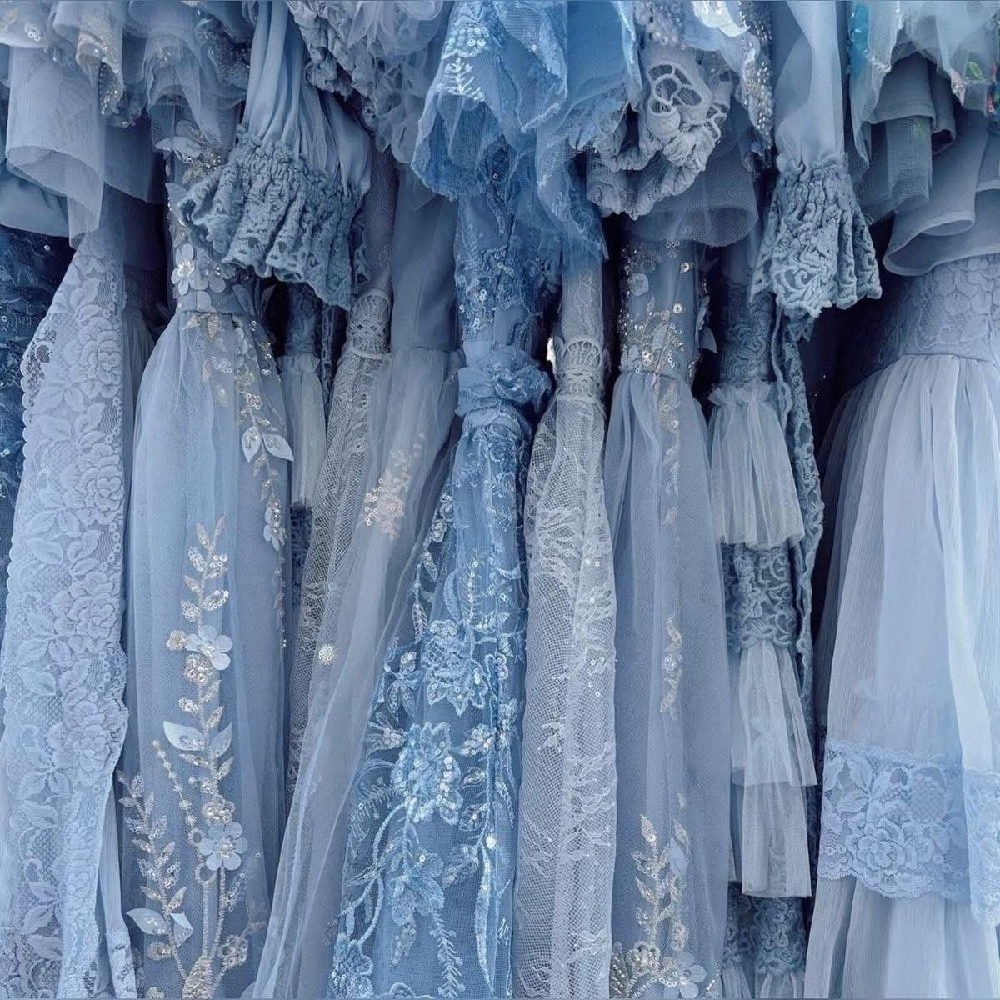

You were honestly SUPER close structurally, so I just cleaned it up while keeping your original idea and layout style the same:
Colors and Fonts Practice
Color and Fonts Practice
Hello, this is a practice CSS style sheet.
-
Blue Dress

-
Blue Book

Blue Bed
And layout-wise? YES — this is the proper structure for:
* ordered list
* heading
* image underneath
* repeat for next item
So your instinct about opening and closing each separately was RIGHT.